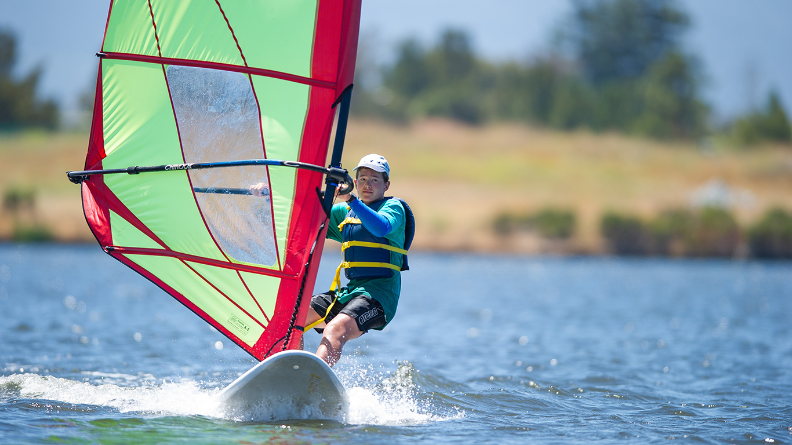

-
 80°
80°
-
 12KT
12KT

advanced windsurfing
Advanced Windsurfing
Campers can take their windsurfing to the next level and learn advanced techniques using high performance monofilm sails. They will learn how to rig and tune their sail for improved performance, how to beach start, and use a harness and footstraps. Mastering the use of this equipment will allow campers to begin planing, transforming their windsurfing boards into a skimming projectile gliding over the water.
Windsurfing with a harness allows campers to take the weight of the sail off their arms, so they can windsurf for longer and with less effort. Footstraps provide directional control of the board through the legs, rather than using the sail to control direction, so campers can steer while planing.
Topics covered also include an overview of important safety measures and skills for campers to take their windsurfing beyond Shoreline Lake, such as how to handle tides, different wind directions, and how to deal with broken gear.
Prerequisites: Successful completion of Intermediate Windsurfing and Sailing camp (or equivalent windsurfing experience). Must have experience using a 4.0 m² or larger sail and a 160 L or smaller board. Reaching this skill level may require completing Intermediate Windsurfing and Sailing camp multiple times. Requires approval from a Shoreline windsurfing Instructor. And, campers should be comfortable swimming and treading water.
To Keep in Mind: Campers should be comfortable swimming and treading water, be able to submerge their heads under water, behave prudently if a capsize occurs, and be in adequate physical shape to engage in the Camp’s activities. If in doubt, please contact your doctor. In addition Campers and/or parents must notify a staff member regarding any medical condition of which the instructor should be made aware. Although you may provide your own, Shoreline does provide PFDs (life vests) and wetsuits.
Lunch is not included with this camp.
What to Bring
Campers should bring comfortable clothes, a jacket or fleece, a towel and change of clothes, lots of sun protection, a lanyard to secure their glasses around their heads, a reusable water bottle, and shoes or booties to wear while windsurfing and in the water. No flip-flops allowed. Campers should have a pair of water shoes/aqua socks to wear while boating, and a pair of athletic shoes to wear before and after boating.
Hats and sunglasses are recommended but not required. If wearing glasses, Campers should bring a lanyard to secure glasses around their head. It is also a good idea to send along some additional money or a snack with your Camper to carry him/her throughout the day, as well as for locker tokens – cost $2 and are recommended for securing valuables.
Important: On the first day of camp, please arrive 15-20 minutes before the start time to register and sign-in
Please Note: Also, parents, no pets, including dogs, may enter the park, even if they are inside a vehicle when dropping off and picking up campers.